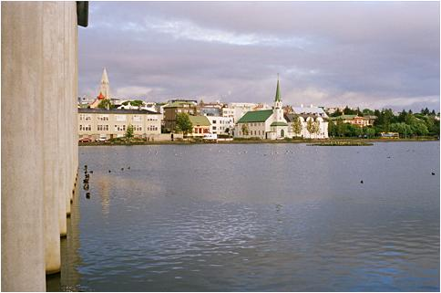
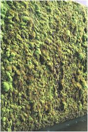
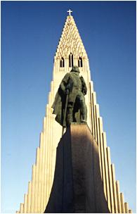
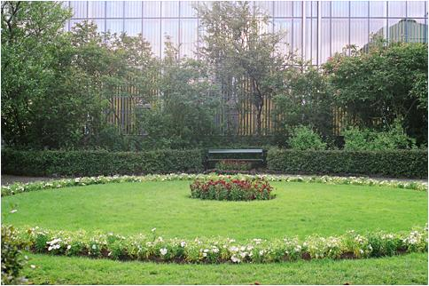

<< retur Fra Reykjavik til Edens Have Farvel til Reykjavik
Jeg sidder ved morgenbordet på Frelsens Hærs Hotel i det centrale Reykjavik. På islandsk hedder det Hjálprædisherinn, og det må vel direkte oversat betyde hjælperådshæren.
Jeg har været mange år om at lære at udtale
det svære ord, men når jeg nu føler mig så
godt tilpas på dette hotel, som jeg har brugt som udgangspunkt
i over 40 år, er det vel rimeligt nok, at jeg også
kan udtale det på islandsk.
Jeg har lige spist skyr med rugbrødsdrys og brunt sukker
samt flere stykker ristet brød med æg, postej, tomat,
agurk og ost. Dertil har jeg drukket adskillige kopper stærk
kaffe, som af en eller anden grund altid smager bedre på
Island. Jeg har besluttet at køre Island rundt alene for
at udfordre mig selv og håber på en erindringens nærkontakt
til de mere end 30 rejser, jeg har foretaget til Island. Det er
min intension at lade tankerne flyde frit mellem nutid - fortid
og fremtid, da vores virkelighedsopfattelse jo normalt hører
hjemme på denne tidsakse.
Overordnet set har jeg besluttet mig for at køre mod syd og øst for så at fortsætte mod uret hele vejen rundt. Undervejs agter jeg fortrinsvis at bo på bondegårde. Jeg har tre uger til min rådighed, og det føles som en uendelighed lige nu. Rent symbolsk kan jeg godt lide fornemmelsen af at rejse mod uret. Det giver mig en følelse af at kunne standse tiden og få noget mere evighed ind i nuet. Jeg
sidder og kikker rundt i lokalet. Der er nogle få islændinge,
men de fleste er turister som mig selv-flest amerikanere denne
morgen. Stemningen er hjemlig og hyggelig og gennemsyret af en
gedigen kristen ånd og duften af kaffe. På væggen
over døren hænger et broderi med ordene Drottinn
Blessadu heimilid -
Herren velsigne Hjemmet! Flere billeder på væggen
har bibelske motiver og det beroliger mig. Der er hyrden på
marken, som holder sin hyrdestav i den ene hånd, medens
han overrumplet og skrækslagen løfter den anden mod
det stærke lys og røsten fra Himmelen, der siger:
”Frygt ikke !”
På et andet billede står en ung sømand ved
roret ombord på sin båd. Havet er i vildt oprør,
og styr-manden kniber øjnene sammen i håb om at skimte
lys forude. Bag ham står Kristus beskyttende og peger den
kurs ud, han skal holde.
Det er rart at vide, når man nu skal til at begive sig ud
på en lang køretur Island rundt. Jeg er dog klar
over, at ansvaret for et godt udfald af turen også afhænger
af mig selv. Gud hjælper den, der hjælper sig selv.
Men tilfældet råder jeg ikke over-hverken det ekstremt
heldige eller uheldige.
Inden
morgenmaden er færdig, har jeg besluttet mig for ruten.
Jeg vil gerne opleve Islands spændvidde den første
dag med kogende mudderpøle på Reykjaneshalvøen
og Edens Have i Hveragerdi -
for der-efter at sætte kursen mod den gyldne trekant, hvis
hjørner er Thingvellir,
Geysir/Gullfoss samt Skálholt.
Jeg har besluttet mig for at følge ruten mod syd gennem
forstaden Hafnarfjördur og videre ad rute 42 mod Kleifarvatn
til Krisuvik.
Derfra vil jeg køre videre langs med kysten mod Hveragerdi,
hvor jeg vil gøre holdt på cafeen Eden.
Jeg går en tur rundt i byen for at indstille mig på den lange køretur. Først går jeg ned til søen Tjörnin, hvor det nye rådhus er bygget helt ud i søen.

Jeg oplever det som et stilbrud i forhold til den gamle bydels øvrige bebyggelser heriblandt Domkirken og Altingsbygningen og de gamle huse med blikbeklædning og farvede bliktage.
Hovedindgangen til Rådhuset går over et fladbundet vandbassin, hvorfra der rejser sig to lodrette halvmure, som ligner mosbeklædt basalt.
|  | Vandet
driver ned ad murene og holder mosset i live, og sceneriet her
i byens midte minder om det, jeg skal møde rigtigt meget
af på turen- nemlig hraun- det islandske ord for lavamark.
Her midt i Reykjavik kan man nemlig heller ikke undgå at
se utallige tegn på Islands vulkanske oprindelse.
Altingsbygningen
er opbygget af grå søjlebasalt, samme materiale som
Reykjavik er bygget på og som titter frem mange steder i
byen, bl.a. ved Hallgrimskirken, som troner over byen, med en
statue af den gæve viking Leifur Erikson, der med sit erobrerblik
stirrer mod det forjættede land.
Det
imponerende kirketårn er flankeret af polygone beton-søjler,
givetvis inspireret af søjlebasalt, som man ser mange steder
på Island.
Jeg
slentrer videre ned mod havnen og går op på højen
med statuen af Ingólfur Arnarson, der slog sig ned her
i Reykjavik omkring år 874, ca. 10 år efter at Nordens
apostel Ansgar var død. | Ingólfur
valgte at slå sig ned her, fordi det var her, hans højsædestøtter
fra boligen i Norge var drevet i land. Han kaldte stedet Reykjavik
(Røgvigen), da der steg damp op fra de varme kilder i undergrunden.
Det var gudernes vilje, at han skulle bosætte sig her, og
det viste sig at være et klogt valg. Dels var og er Reykjavik
den perfekte naturhavn godt beskyttet mod nord af Fjeldet Esja,
dels er her varme kilder, som også nutidens indbyggere i
Reykjavik i høj grad nyder godt af. Der ligger nu en svømmehal
i Laugardalur, hvor fortidens indbyggere tog sig et varmt bad
eller vaskede deres tøj. Hovedgaden mod vest hedder stadig
Laugarveg, fordi den førte til de varme kilder.
Over for Frelsens Hærs Hotel ligger der på hjørnet
en bygning, i hvis kælder der er en fremragende udstilling,
der hedder 871+- 2. (se www.reykjavik871.is
) Her er afdækket resterne af langhallen fra en gammel gård
under bygningen, som må have tilhørt en af de ældste
bebyggelser i Reykjavik, men den er altså bygget lige før
Ingolf Arnason kom til byen.Nogle af hans mænd må
være rejst i forvejen og har bygget denne gård, hvis
datering er helt sikker på grund af et lyst askelag fra
871-+2, som dækker tomten. Den moderne multimedie-teknologi
er taget i anvendelse i en grad, som får en til at føle
sig hensat til fordums tid både med hensyn til det omgivende
urørte landskab dengang og indretningen af et vikinge langhus. | -  |
Jeg går videre hen til Altinget og ind i Altingets lille
charmerende have for at få et øjebliks fred og ro,
inden jeg kører. Det overrasker mig, så fredfyldt
den lille have virker. Her lige klods op ad landets parlament
kan man sidde i ro og mag og meditere i Reykjaviks centrum uden
at blive forstyrret af andet end fugle, der kvidrer, og et fly
i ny og næ lige over hovedet.
 På
vej mod min lejede bil ved busstationen BSI passerer jeg en fin
lille kvindeskulptur af en kunstner ved navn Johannes Bjerg. Figuren
hedder Pomona - en romersk gudinde for frugtavl og æbledyrkning
i særdeleshed Hun står nok så yndefuldt med
et æble i hånden. en.wikipedia.org/wiki/Pomona
Mod
Kleifarvatn og Krysuvik.
Jeg kører ad ringvejen mod Keflavik gennem forstaden Hafnarfjördur
og drejer så mod syd ind på rute 42. Ikke så
snart er jeg drejet væk fra hovedvejen, lige før
aluminiumsfabrikken, før det åbne landskab møder
mig- urørt af menneskehånd. Den samme følelse
griber mig, som da jeg landede på Island første gang
for 36 år siden-en følelse af frihed-ubegrænset
frihed. Jeg standser bilen og giver efter for trangen til at løbe
ind igennem den bølgende, mosklædte lavamark. Allerede
nu er jeg i Islands Hjerte - i HRAUN.
Hraun har det hele-de store vidder, de bløde små
sænkninger med grønt mos, som indbyder til at lægge
sig ned eller holde picnic. Man kan forsvinde helt i hraun, og
man kan være meget synlig, hvis man stiller sig op på
et lille krater og råber mod himlen - men ingen kan høre
en, kun vindens susen svarer igen. Efter dette lille indledende
amokløb sætter jeg mig ind i bilen igen og kører
videre mod Kleifarvatn.
Så langt øjet rækker, ses nu kun størknet
lavamark i alle mulige nuancer fra gråt over brunt til irgrønt
i de små fugtige lavninger, hvor kun mos kan gro. Jeg passerer
en forholdsvis frisk lavastrøm Kapellu-hraun,
som ikke ser ud til at være så gammel. Et opslag i
guiden viser da også, at den stammer fra årene 1151-1188
altså samme periode som cisterciensermunke ankom til Danmark
og byggede klosteret Vitskøl ved Limfjorden(1158) og som
siden hen drog sydpå for til sidst at slå sig ned
i Øm syd for Ry i 1172. De kaldte klosteret Den
kære Ø-Cara Insula.
Det samme kalder jeg Island, mit andet hjemland.
Mod
vest kan man se den kegleformede vulkan Keilir, men ellers minder
lavamarkerne mest af alt om et oprørt hav, der pludselig
er størknet. Lavabobler, med sprækker som i brød,
der lige er taget ud af ovnen, ligger mellem spalter, revner og
højdedrag, der næsten alle forløber nordøst-sydvest
Jeg kører nu i den nyvulkanske zone på Island, der ligger længst mod vest. Det er her på Reykjanes halvøen, at Den Midtatlantiske Ryg går på land. Her under mine fødder ligger den spaltezone, som alverdens geologer valfarter til for at se, hvordan en ”hav-ryg” bliver til en ”land-ryg”. Søen
Kleifarvatn
(www.oplevisland.dk/kleifarvatn.html)
kommer som en overraskelse i dette tørre landskab, hvor
ikke et vandløb eller en sø ellers ses. Jeg kører
for foden af højderyggen Sveifluháls og ind til
venstre på en parkeringsplads højt hævet over
søens overflade. Herfra kan man kigge ned på den
store sø med det krystalklare vand. Vandspejlet er helt
blankt og spejler klippeformationerne omkring søen, hvor
en mægtig højderyg rejser sig på den modsatte
bred. Det ser ud, som om søen er tappet for vand for nylig,
men da der ingen afløb er, må tapningen være
sket fra neden af den over 100 meter dybe sø. I 1999 var
der nogle store jordskælv i området, som åbnede
nye sprækker og revner under søen og vandstanden
sank et par meter, men er efter sigende på vej op ad igen.
Stærke kræfter trækker i Island. Europa og Nordamerika
glider fra hinanden med nogle millimeter hvert år, og her
står jeg og ser ned i en rift-valley, hvis bund ligger under
havets overflade.
Jeg synes, jeg ser skyggen af et stort svømmende dyr, men
det er velsagtens fantasi. Da jeg var her for 25 år siden,
talte jeg med nogle mennesker, som havde iagttaget nogle fortidslignende
dyr, der havde lejret sig i sandet ved søbredden for derefter
at forsvinde under søens overflade.
De havde endda efterladt sig spor i sandet, men er ikke blevet
set siden. Pudsigt nok virker historien ikke usandsynlig. En nat
alene her på søbredden kunne sikkert overbevise selv
de største tvivlere. Island har også sit Loch Ness
uhyre.
Jeg kører videre mod syd mod det boblende inferno i
Krysuvik. (www.oplevisland.dk/krisuvik.html
)
Her hvæser det af damp, som har modsat sig et forsøg
på at tæmmes. For år tilbage havde man gjort
forsøget, og der stak nogle rør op af jorden med
forbindelse til nogle drivhuse i nærheden, som blev forsynet
med varmt vand fra undergrunden. Nu ser jeg ikke mere tegn på
udnyttelse af de billige kalorier, der her vælder op ad
jorden i form kogende kilder og mudderpøle. Ja, selv et
lille vandfald er der med næsten kogende vand, hvori der
er grønt af slimede alger, som stortrives med de høje
temperaturer. Livet er i sandhed ukueligt!
Måske var det omkring sådanne varme kilder, at livets
byggestene blev dannet i tidernes morgen.
Her stinker af svovlbrinte, og hele området er hyllet i
damp, som til tider gør det vanskeligt at orientere sig.
Kontrasten til Kleifarvatns ophøjede ro er slående.
Jeg går gennem dampen på gangbroer af træ op
til en lille udsigtsplatform, hvorfra man kan overskue den lille
dals herligheder.
Den vestlige gren af de nyvulkanske zoner er ikke helt død
endnu. Længere mod vest ligger Den
Blå Lagune og et geotermisk
kraftværk, som leverer strøm og varme til de nærliggende
byer Grindavik
og Keflavik.
Også salt udvindes fra det saltholdige vand, der strømmer
op fra undergrunden.
Jeg løsriver mig, kører lidt længere og standser
ved Grænavatn
få hundrede meter fra de kogende mudderpøle. Grænavatn
har grønt vand, som navnet siger, og den cirkulære
sø er faktisk resterne af en eksplosionsvulkan - en såkaldt
Maar, der i et big blow har blæst dette store hul på
ca. 300 meter i diameter og 44 meter i dybden. Måske har
vulkanen gylpet lidt lava efterfølgende, sprængkraften
har været enorm og det meste af materialet er blevet pulveriseret
til småstykker af løse produkter.
Mod Hveragerdi
Turen går nu videre mod kysten, indtil vejen deler sig i
en fortsættelse af rute 42 mod Hveragerdi og en vestlig
gren mod Grindavik. Jeg kører lidt i retning mod Grindavik
for at se Ögmundarhraun,
som også stammer fra Krisuvik Ilden i 1151-1188. Når
man kommer til den østlige udkant af lavastrømmen,
kan man gøre holdt og følge en lille sti mod syd
langs den østlige lavakant. Et stykke mod syd går
en gangsti ind gennem lavamarken mod Húshólmi
og Óbrennishólmi,
hvor man kan se ruinerne af en gård og en kirke, som var
beboet, indtil lavastrømmen ødelagde livsbetingelserne
der.
Jeg mindes Ögmundur, som har givet navn til lavamarken, fordi
han ufrivilligt måtte bøde med sit liv, da han i
forhåbninger om at få bondens datter på gården
i Krysuvik tilbød at bane en vej gennem den nye lava. Netop
som han, med stort håb om det forestående bryllup,
var ved at være færdig med det hårde arbejde,
dræbte bonden ham. Hans datter var for god til en sådan
bersærk af en lavaknuser. Hvad datteren har følt,
meldes der intet om i historien.
Nedslået over den historie vender jeg bilen og kører igen mod Hveragerdi ad rute 42 langs kysten, (www.oplevisland.dk/sydkyst.html). Igen et forfriskende skift fra den stille sø og det dampende mudder til brændingszonen langs en mere grøn og frodig zone, hvor der er græsgange til får og heste. Nye dufte og farver melder sig. Ved Strandarkirkja holder jeg en lille pause og spiser den medbragte frokostpakke bestående af tørfisk og brød med islandsk postej(keifa). Jeg kører videre og passerer vejen mod Thorlákshöfn, hvor der er forbindelse med færge til Vestmannaeyjar. | Edens Have
Drivhusbyen Hveragerdi nærmer sig hastigt. Jeg glæder mig til kaffe og kage. Landskabet syd for Hveragerdi bliver grønnere og grønnere. Jeg kører langs med Ölfusá, udløbet fra de store floder Hvita med det grumsede cafe-au lait farvede smeltevand fra Langjökull og Sog, der kommer fra Thingvellir med krystalklart kildevand.
Af en eller anden grund er det svært at finde Cafè
Eden,
så jeg cirkler længe rundt igennem byen med de mange
drivhuse, en moderne kirke og et vegetariske helsehjem for gigtpatienter.
Hjemmet hedder Heilsuheili
og fungerer med mudderbade og vegetarisk mad samt fysiurgiske
behandlinger, en cocktail, som efter sigende skulle have en næsten
mirakuløs virkning.
Endelig finder jeg frem og går ind under en kæmpe
glaskuppel, hvor der vokser både bananer og appelsiner og
palmer samt en masse tropiske vækster i blomst. Her er varmt
og fugtigt og lidt for mange mennesker efter min smag, men sådan
er det måske i Edens Have. Jeg slentrer rundt og kigger
på herlighederne og glæder mig over, at jeg ikke er
kommet her for at skulle tilbringe tiden i al evighed. Som forsonende
moment kan det dog nævnes, at der findes en udmærket
cafe med et stort udvalg af kager - heriblandt Marengs
med Rababari,
som jeg for første gang i mit liv stødte på
her, og som overgår alle andre kager. Marengs med Rababari,
udtalt på den rette måde, er en overordentlig stor
delikatesse, hvis den nydes i små mundfulde og bliver skyllet
ned med skoldhed kaffe. Jeg tager kagen og kaffen med udenfor
i lidt køligere temperatur, hvor den friske luft er krydret
med en svag duft af svovlbrinte fra de mange dampkilder i byen.
Medens
jeg sidder her i solen og nyder den søde knasende lyd af
rababerkompot på marengs, kommer en udenlandsk yngre kvinde
hen til mig og spørger om jeg vil passe på hendes
øl. Det vil jeg naturligvis gerne- det skulle da lige mangle
her, hvor vi alle principielt må være lige. Så
jeg passer på kvindens øl, medens jeg spiser min
marengs færdig med stor nydelse og begynder så at
overveje, om kvinden kommer tilbage. Det gør hun efter
et kvarters tid og byder mig et stort, dejligt rødt æble
og spørger nu, om hun må låne min mobiltelefon
for at ringe til en, der skulle møde hende her i Edens
Have. Jeg låner hende telefonen og sætter uden tøven
tænderne i det saftige æble og glider ind i en tilstand
af drømmende uskyld. For mit indre blik ser jeg den nøgne
Eva fra Paradisets Have stå med æblet rakt frem imod
mig. Jeg ved nu, at jeg må fortsætte min køretur
mod Den
Gyldne Trekant.
Copyright Morten Stender << retur |
|